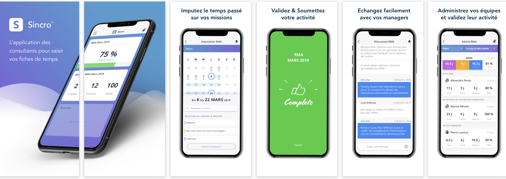
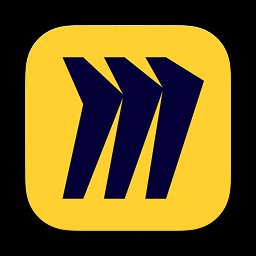
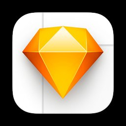
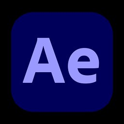
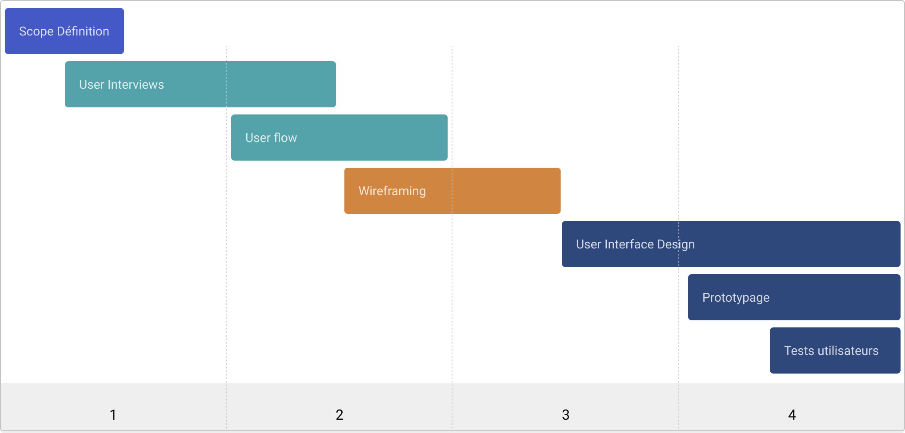
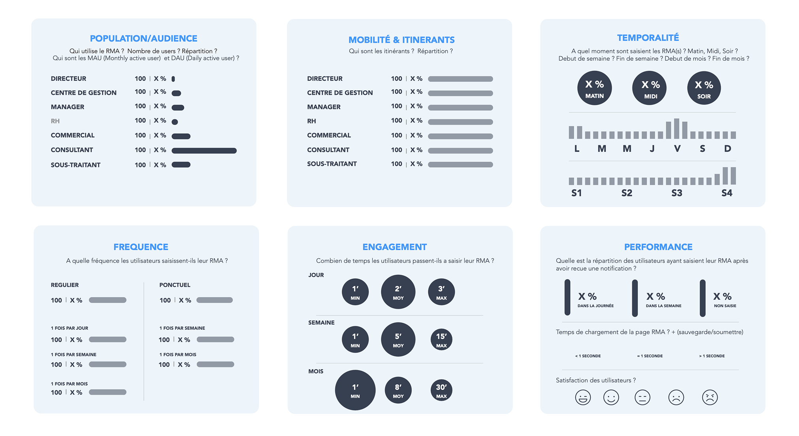
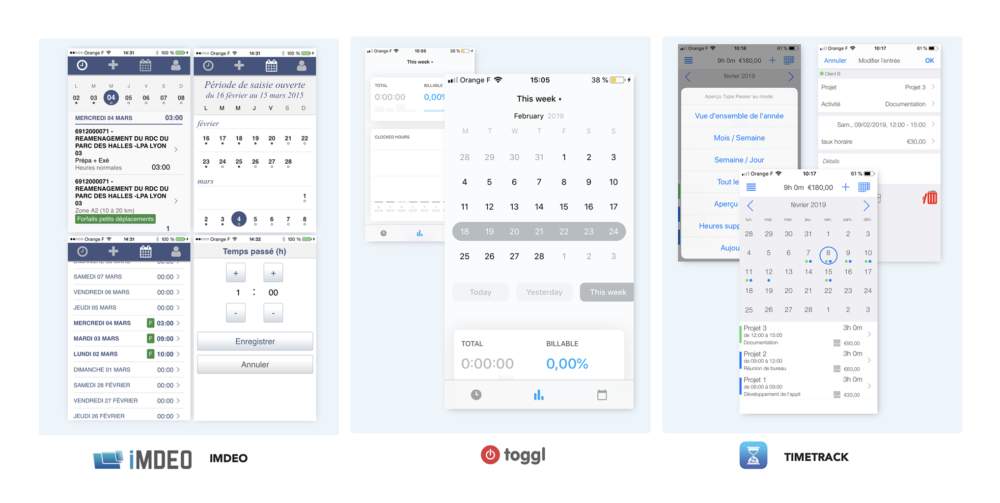
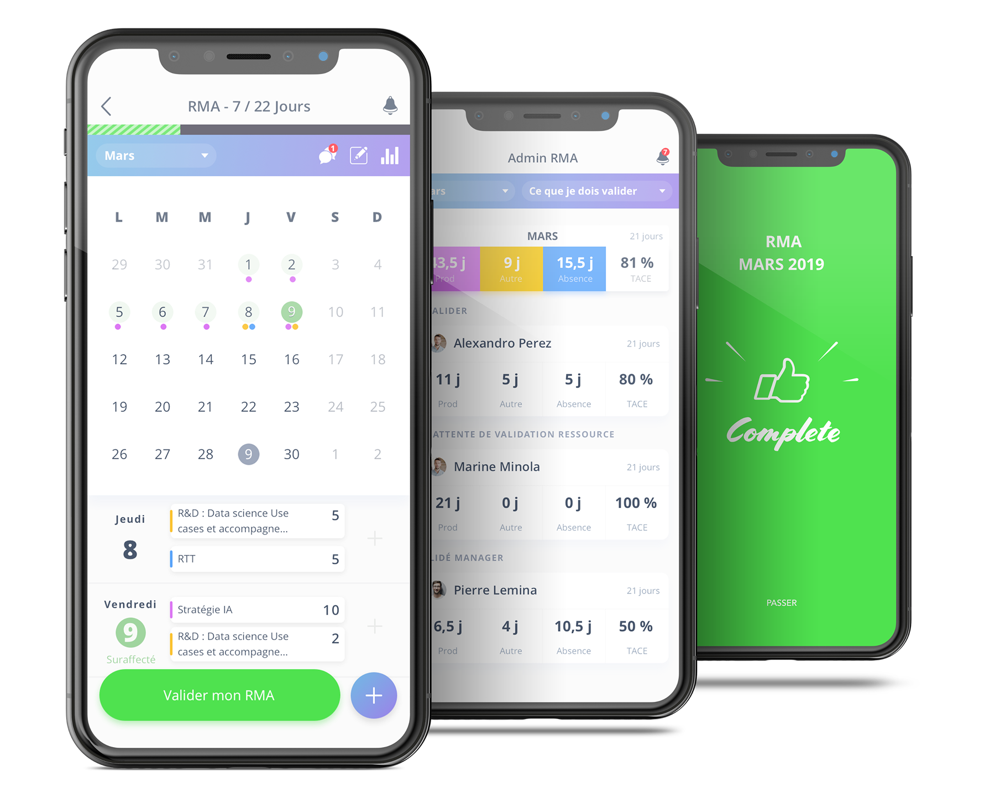
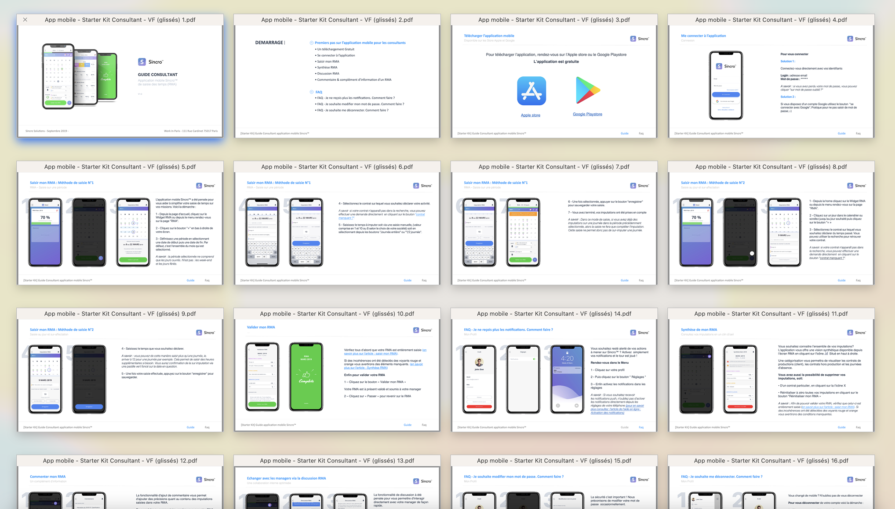

L’app de poche des consultants en mission
Saisie des temps, rapport d’activité, absences. La meilleure app quotidienne pour tous les consultants.

La mission
Sincro est l'application mobile attendue par tous les consultants en mission. Le service permet aux utilisateurs de saisir facilement et rapidement leur temps d'activité, où qu'ils se trouvent. Grâce à sa connexion directe avec la solution web, les utilisateurs peuvent remplir et compléter leur rapport mensuel d'activité en toute mobilité. De plus, il était essentiel de simplifier la démarche de demande d'ajout de contrat, la rendant plus accessible que jamais, directement auprès de leur manager. Pour les managers, Sincro est un outil puissant qui leur permet non seulement d'ajouter de nouveaux contrats, mais aussi de valider les rapports, d'avoir une vue d'ensemble complète, incluant le temps de production, le temps passé en intercontrat et les absences de toute leur équipe. Cette solution offre également la capacité de mesurer le TACE (Taux d'activité Congés exclus). Notre objectif principal était de simplifier au maximum l'expérience des utilisateurs et d'améliorer la communication entre ces deux groupes d'utilisateurs. Sincro a été conçue pour être aussi intuitive et efficace que possible, rendant la gestion du temps et des contrats aussi simple que possible pour tous les utilisateurs.
Simplifier l’expérience de saisie des temps
Substituer les demandes mail aux managers
Offrir un canal d’échange dédié
Automatiser & notifier les rappels de saisie
Mon rôle
En tant que Product Designer, j'ai dirigé l'ensemble des travaux liés à la conception de l'application. Au cours de ce projet, j'ai eu le plaisir de collaborer étroitement avec notre Product Manager interne, Damien Mordaque, ainsi qu'avec les équipes de l'agence Creatiwity pour le développement de l'application, composées de Johan Dufau en tant que Lead Dev Mobile Backend et Julien Blatecky en tant que Lead Dev Mobile Frontend.
Tâches principales
- Interview et Scope
- Recherche et idéation
- Exécution du design et prototypage
- Validation des designs
Design & Research Tool kit

Miro
SketchZeplinInterview
After EffectsMazePlanning
Le projet s’est déroulé en 4 grandes phases : définition du scope d’intervention, interviews utilisateurs, parcours & userflow, wireframing, finalisation des interfaces, prototypage et tests utilisateurs.

Deck de recherche
Analyse des usages
Premièrement pour constituer notre deck de recherche, nous avons exploité les données (KPI) de la solution web afin d'analyser les usages des utilisateurs de la plateforme. Notre analyse s'est portée sur différents critères en fonction des typologies d'utilisateurs : population/audience, mobilité/itinérants, temporalité des besoins, fréquence, engagement, performance et satisfaction. Nous avons également croisé l'ensemble de ces données avec des entretiens individuels.
Pour des raisons de confidentialité les données du visuel ci-dessus sont masquées.

Concurrence
Dans notre deck de recherche, nous avons également analysé l'ensemble des acteurs du marché concurrentiel. Cela nous a permis d'identifier les bonnes pratiques, mais aussi d'auditer les solutions afin de proposer une expérience encore plus intuitive lors de la conception de l'application Sincro.

La solution
User interface
Une fois le travail d'idéation exploré, nous avons travaillé sur la conception des UI finales. En voici une synthèse.

Documentation
Afin de maximiser l'adhésion de nos utilisateurs, nous avons également documenté l'ensemble des fonctionnalités disponibles dans l'application. Ce travail a permis à nos clients de promouvoir en interne le lancement de l'application et d'accroître l'engagement de leurs collaborateurs.

Prototype
Retrouvez le prototype sur Figma. Pour des raisons de confidentialité le prototype n’est pas accessible pour le moment.
Les impacts
Après le déploiement sur les stores en mars 2019, nous avons analysé les résultats d’utilisation de l’application versus l’usage web sur les 3 mois suivants. Voici quelques données majeures :
Remerciements
Merci à l’équipe Sincro
 Damien Mordaque
Damien Mordaque Kevin Mouzet
Kevin Mouzet Emile Leenhardt
Emile Leenhardt